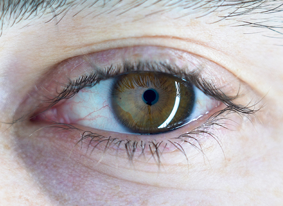
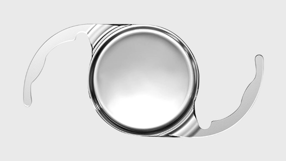
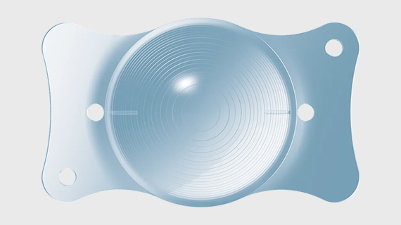
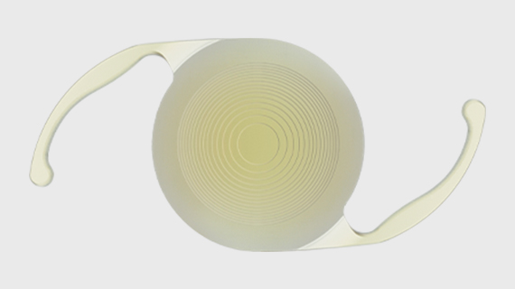
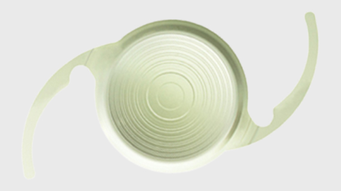

3차원 입체 절개로 백내장 제거와 굴절이상 교정 동시 가능

인공수정체란 수정체 역할을 대신할 수 있는 렌즈를 말합니다.
모든 거리의 교정이 필요한 경우 다초점 인공수정체
삽입을 통해 원거리와 근거리 모두 개선할 수 있습니다.
단초점 인공수정체의 경우 원거리는 개선되지만
가까운 거리는 돋보기를 사용해야 합니다.

일반 단초점 인공수정체의 우수한 원거리 시력 제공과 더불어
생활 속에서 빈번히 발생하는 활동을 위한 중간 거리 시력과
어두운 환경에서 우수한 대비도를 제공합니다.
스마트폰 작업, 동영상 시청 등 생활형 중간거리 시력 향상
선명한 생활형 중간거리(66~100cm) 시야
주간 · 야간 모두 또렷한 먼 거리 시야를 제공
회절링 · 굴절존 없는 디자인으로 빛 번짐, 눈부심 불편함 최소화

유럽에서 10만건 이상 시술이 이루어진
증명된 다초점 인공수정체로서 노안시력과 백내장까지
함께 난시까지 교정하는 시술방법입니다.
70~90cm의 중간거리 시력이 획기적으로 개선
회절에 의한 빛 산란 최소화, 시력 질 향상
야간 빛 번짐 및 달무리 현상 최소화
초고도 근시 교정 가능, 근시가 동방된 노안교정에 효율적
수술 다음날 일상생활 가능

전세계 1억개 이상 시술된 알콘사의 세계 최초 4중 초점원리
인공수정체입니다. 3중 초점렌즈에서 부족한 60cm를
추가해 연속적 시야확보가 가능합니다.
4중 초점으로 모든 거리에서 뚜렷한 시력 제공
수술 후 안정성이 좋아 장기간 안정적 굴절결과를 보임
어떠한 밝기에서도 양질의 시력 결과를 보임
수술 후 다음날 일상생활 가능

2021년 존슨앤존슨사가 개발한 다초점렌즈로
연속초점이 장점입니다. 근거리에서 원거리까지 잘 유지되어
어두운 곳이나 야간운전에 우수성을 자랑하는 렌즈입니다.
글로벌 최초 연속초점과 다초점 기술 동시구현 렌즈
가까이부터 멀리까지 이상적인 거리에서 선명함 유지
우수한 대비감도로 어두운 실내나 밤에도 또렷한 시력
추가 수술 없이 노안과 백내장을 동시에 교정
수술 후 빛 번짐을 최소화

월 화 목 금
am 09:00 ~ pm 06:00토 요 일
am 09:00 ~ pm 04:00점 심 시 간
pm 01:00 ~ pm 02:00수요일, 일요일, 공휴일 휴무입니다.
공휴일 있는 주는 수요일 대체진료입니다.